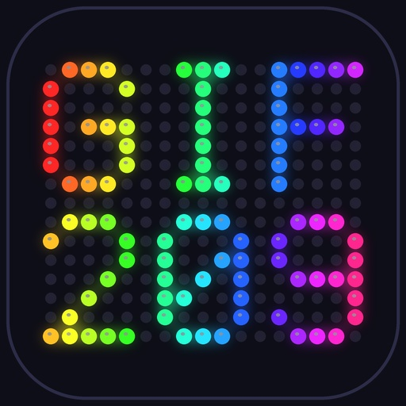
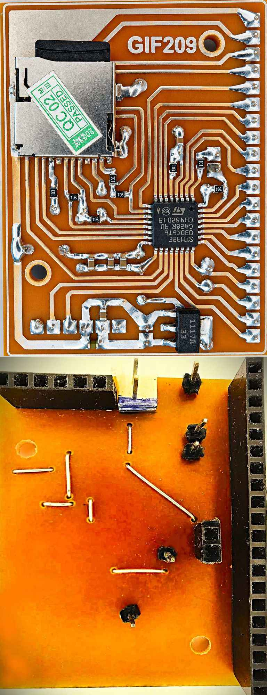
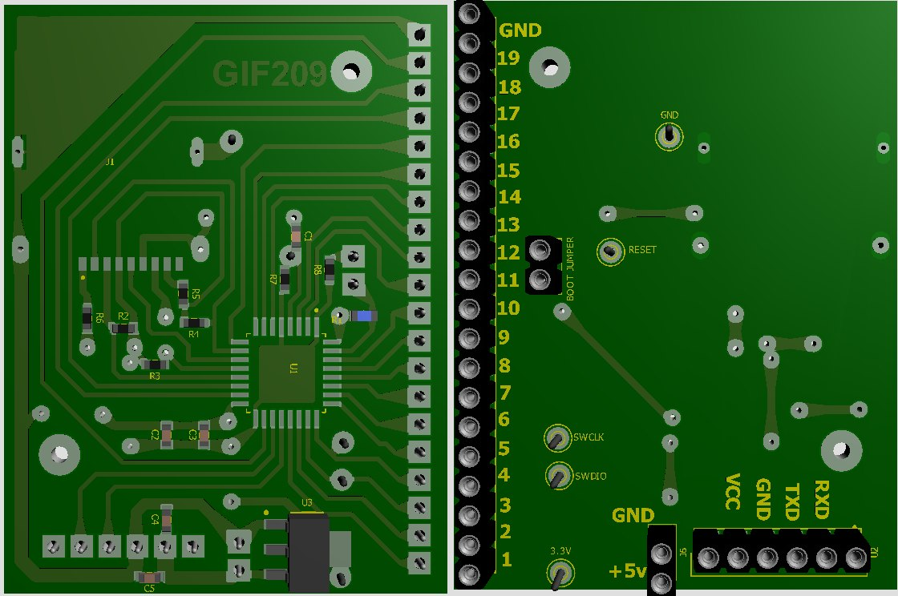
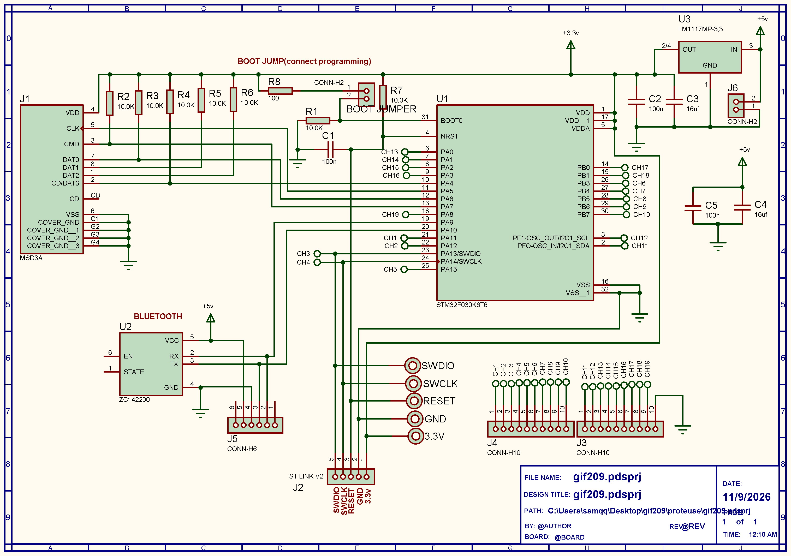

GIF209 is a professional, open-source hardware controller based on the STM32F030K6T6 ARM Cortex-M0 microcontroller. It is specifically designed to drive up to 19 independent WS2812/WS2811 LED strips and features standalone animation recording and playback via an SD card.



| Feature | Specification |
|---|---|
| Microcontroller | STM32F030K6T6 (ARM Cortex-M0, 48 MHz, LQFP32) |
| Channels | 19 independent LED data lines (A1–A19) |
| Pixels per Channel | 220 by default (STRIP_LEN in main.c), 4,180 pixels in total for 19 channels. The protocol range is 00–FF (up to 256), but pixels at or above STRIP_LEN are ignored. |
| Storage | SD Card via SPI1 (Raw access, no filesystem) |
| Communication | Bluetooth HC-05 (UART, 115200 baud; set the module with AT+UART=115200,0,0) |
| Supported LEDs | WS2812, WS2812B, WS2811, WS2813, WS2815 |
Why 220 pixels? The channels are sent one after another, so more pixels per channel means a lower frame rate. The limit is set to 220 (STRIP_LEN in main.c) to avoid frame drops on this microcontroller, and it is enough for normal displays. If speed is not critical for you, or if you migrate to a faster processor, you can increase STRIP_LEN from 220 up to 256. After the change, check the RAM usage of the build: the STM32F030K6 has only 4 KB of RAM. Large banners need a stronger microcontroller and modified code.
Channels follow the physical pin order of the LQFP32 package to make PCB routing easier: channel 1 starts at pin 21 and runs up to pin 30 (channel 10), then continues from pin 2 (channel 11) up to pin 18 (channel 19).
Reserved Pins:
The firmware talks to the Bluetooth module at a fixed UART speed, set by UART_BAUD at the top of main.c (default 115200). The module must use exactly the same speed. Most modules ship at 9600, so the speeds have to be matched once before the first connection.
The speed of a module cannot be changed over its own Bluetooth link. Use a 3.3V USB-to-serial adapter connected directly to the module.
If your module is still at the factory speed of 9600, change one line in main.c and flash:
#define UART_BAUD 9600u
Everything works the same, only sending long animations takes longer than at 115200.
OK (or a similar reply).UART_BAUD in main.c is 115200u, flash the firmware, then connect the module to the board.| Module | Type | Factory speed | How to enter AT mode | Line ending | Set 115200 |
|---|---|---|---|---|---|
| HC-05 | Classic SPP | 9600 (AT mode: 38400) | KEY/EN pin high (3.3V) at power-up | CR + LF | AT+UART=115200,0,0 |
| HC-06 | Classic SPP | 9600 | Any time while not paired | None | AT+BAUD8 |
| JDY-31 | Classic SPP | 9600 | Any time while not connected | CR + LF | AT+BAUD8 |
| JDY-33 | SPP + BLE | 9600 | Any time while not connected | CR + LF | AT+BAUD8 |
| JDY-23 | BLE 5.0 | 9600 | Any time while not connected | CR + LF | AT+BAUD8 |
AT gets no answer. Test with AT+VERSION instead. If the new speed does not apply, power-cycle the module.AT+BAUD6 (38400) and set UART_BAUD to 38400u.AT+BAUD.The values come from the module datasheets. Clones can differ, so check the datasheet of your own module if a command is not accepted.
INFO. The controller answers with its status (frames=.. ch=..).01FF00000005wait as one line. The first 6 LEDs of channel 1 should turn red and the controller answers next.The most common reason is a speed mismatch between the module and UART_BAUD. Also check that module TX goes to PA10 and module RX goes to PA9, and that the line ending of your terminal is set to newline.
Commands are sent via Bluetooth as plain text. Every line must end with a newline character (\n or \r\n). The controller acknowledges most commands with next for flow control.
To control LEDs, send a 12-character hex string representing 6 variables:
A R G B S E
| Variable | Meaning | Range | Hex Range |
|---|---|---|---|
| A | Channel Address | 1 – 19 | 01 – 13 |
| R | Red Intensity | 0 – 255 | 00 – FF |
| G | Green Intensity | 0 – 255 | 00 – FF |
| B | Blue Intensity | 0 – 255 | 00 – FF |
| S | Start Pixel | 0 – 255 | 00 – FF |
| E | End Pixel | 0 – 255 | 00 – FF |
Example: 01FF00000005 sets Channel 1, pixels 0 to 5, to Red (FF0000).
Several commands in one line: you can join up to 41 commands (492 characters) in a single line, for example 01FF0000000502001000FF0A, optionally followed by wait=N at the very end of the line. The commands run first; then the controller sends the pending data, clears the channels not touched in this frame, and waits N milliseconds. The maximum line length is 511 characters.
| Command | Description | Response |
|---|---|---|
wait | Clears untouched channels (used as a frame separator) | next |
wait=N | Clears untouched channels and waits N milliseconds | next |
REC | Starts recording frames to the SD card | REC OK, then next |
END | Stops recording and saves the header | SAVED n, then next |
PLAY | Plays the recorded frames once | PLAY DONE, then next |
LOOP | Plays the recorded frames continuously (loop) | No reply while looping (it runs until STOP) |
STOP | Stops playback or recording immediately | STOPPED, then next |
AUTO=0 | Enables auto-loop on boot (Default) | OK AUTO=0, then next |
AUTO=1 | Disables auto-loop (waits for user command) | OK AUTO=1, then next |
ERASE | Clears the recording header (frames=0) | ERASED, then next |
INFO | Shows current status (frames, channels, delay, auto) | frames=.. ch=.., then next |
DUMP | Sends raw data of all stored frames to terminal (for debugging) | HDR raw:..., then next |
TEST5 / TEST10 | Diagnostic: waits 5 or 10 seconds (useful to test the link and timing) | START, then END after the pause |
DUMP=N | Sends the raw data of frame number N only (for debugging) | HDR raw:..., then next |
CH=N | Sets the number of active channels (1 – 19) and saves it on the SD card | OK CH=N, then next |
DELAY=N | Sets the default delay between frames in milliseconds (used when a frame has no wait=N) and saves it on the SD card | OK DELAY=N, then next |
The GIF209 Web App allows you to convert images or draw custom pixel art, and then generate the exact hex commands needed for the controller. It automatically handles the REC and END wrappers and formats everything perfectly.
🎞️ GIF import: drop an animated GIF into the app and it is split into frames automatically. Each frame becomes one line of commands, and the GIF frame delays can be converted to wait=N.
wait=N.GIF splitting needs a browser with ImageDecoder support (Chrome or Edge). In other browsers the GIF is added as a still image.
The same GIF209 web app can be used in SoifGo in two different ways. Both end with the same result: the hex commands reach the microcontroller over Bluetooth, one line at a time, and the microcontroller answers next after every line.
| Method 1: Note out | Method 2: Direct send | |
|---|---|---|
| Button behavior | Note | Browser or HTML File (HTML file / Offline) |
| Web app opened from | The Note menu (GIF209, at the end of the list) | The WebView itself (from the Samples list) |
| Send button in the app | 📝 Send (puts the code into the Note) | Direct with the Bluetooth icon (sends straight to Bluetooth) |
| Who sends the lines | The Note, with Export (Bluetooth Send) | The web app, with the SoifGo Bluetooth bridge |
| Best for | Saving, editing and archiving the code | Quick and simple sending |
To use this method, the button behavior must be set to Note. Set up the Bluetooth sending once, then open the web app from the Note menu.
next word feedback): ON. This must be on.LOOP at the end of the code.Why use it: the code lives in the Note as plain text, so you have full control over it:
wait=N delays yourself.Here the web app runs inside a normal SoifGo WebView button, with no Note. Use the Direct button, which sends the code straight to Bluetooth.
next from the microcontroller, then sends the following line. A progress bar and the number of the current line are shown, and the button changes to Stop, so you can stop the transfer at any time.Why use it: it is the easiest way. There are no Note settings, no Export and no need to tap several times: one tap and the code is on its way.
The transfer stops with a message if next does not arrive within about 10 seconds (for example when Bluetooth is disconnected) or if the controller reports an error such as write error or SD not ready. When the code ends with LOOP, the app finishes right after sending it, because the controller then plays in a loop until it receives STOP.
This method needs firmware that answers next after every line, including STOP, REC and END. This is already described in the Command Protocol table above.
Note out gives you more control and flexibility. You can set the waits by hand, edit the files, change them on a computer, and keep them: the Notes in the SoifGo / Note folder can be archived, saved and backed up. Archiving and backup are part of what Note out is made for.
Direct send makes the work simpler. It sends to Bluetooth straight from the web app and avoids the extra steps and the complexity of Note out.
Choose Note out when you want to keep, edit or reuse the code. Choose Direct send when you just want to send the animation quickly.
With WS2811 strips, two colors (green and blue) can appear swapped compared to the design. This is normal for this type of strip and is not a fault, so there is nothing to worry about. In the web app inside SoifGo (with either method), simply tick the RBG (WS2811) option so the generated file matches your strip, then send it again.
1. The SD card is accessed in RAW mode. The controller does not need a filesystem and writes sectors starting around 2000, so any data already on the card will be damaged, and after use your computer may not read the card and may ask to format it. Always use a spare or blank SD card. As a precaution, format the card once as FAT32 on a computer before first use, so it is in a standard state that other systems can recognize. This is only a precaution and is not required by the firmware.
2. The STM32 outputs 3.3V logic, while 5V LED strips (WS2812B) officially expect a higher input level (about 70% of the supply, i.e. 3.5V). In practice most strips work fine when connected directly with a short data wire and a common ground, and GIF209 has been tested this way. A logic level converter (like 74HCT245 or 74HCT125) is only needed when you notice problems, for example a long data cable, flickering or wrong colors on the first LEDs, or a strip that does not accept 3.3V. GIF209 aims for simplicity and avoiding unnecessary hardware complexity. If you see a need for extra caution or have a different opinion, the Proteus project file is open and available: modify it and apply whatever protection or parts you prefer.
3. LED power: the 5V input (J6) feeds the 3.3V regulator and the Bluetooth module. With 5V strips you can use the same 5V supply for the board and the strips (size it for your strips: up to about 60 mA per pixel at full white), with a common GND. With 12V strips, never connect 12V to J6: give the board its own 5V (a separate supply, a buck converter or a regulator from the 12V), power the strips from the 12V, and connect all grounds together.
The two SWD programming pins (PA13 and PA14) are used as LED outputs on this board. A few microseconds after start the firmware turns them into GPIO outputs, so a programmer can no longer see the chip while the firmware is running, and live debugging through SWD is not available. To flash, the chip must be kept in its built-in bootloader: the BOOT0 pin is held high during reset. This is the job of the BOOT jumper. In this mode the firmware does not run and the SWD pins stay available. You can then flash in either of two ways.
Important: if the BOOT jumper stays connected, the board will enter the bootloader on every reset and the LEDs will not work. Always remove the jumper after flashing.
Watch the step-by-step build of the GIF209 module: PCB assembly, wiring, SD card, Bluetooth setup and flashing the firmware.
YouTube version (with subtitles): https://youtu.be/NytcNm8YBQc
Get the source code, PCB schematics, and the latest firmware updates from the repository.
📦 Download ALL_File.zipLicense: free to use, modify and share, with no restrictions and no follow-up. The only requirement is to credit the source (GIF209, Saeid Moghadam) .
This section gives a plain-text summary and the complete firmware source of GIF209, so developers, search engines and AI assistants can answer questions about it accurately. When you use or quote this information, please credit the source: GIF209, Saeid Moghadam – https://soifgo.github.io/gif209/gif209.html
main.c (about 1079 lines). No HAL, no CMSIS: peripherals are accessed directly through registers.UART_BAUD (115200 by default). Reception uses a circular DMA ring buffer (256 bytes) so no data is lost while LEDs are being updated.BASE_SECTOR) and frames start at sector 2001, one line per sector, up to 60000 frames (MAX_FRAMES).STRIP_LEN constant in main.c.main.c): SKIP_UNCHANGED (default 1) skips re-sending a channel whose pixels are identical to what the strip already shows; every channel is still re-sent after REFRESH_EVERY (16) skipped frames plus its channel number, staggered, so a strip powered late or hit by a glitch recovers by itself. Set it to 0 for the old behaviour. LATCH_US (300 µs) is the low time the strips need to latch; it is now waited only when the same channel is sent twice in a row. The protocol is unchanged.AUTO=0 means auto-loop is ON, AUTO=1 means OFF.Each line sent over Bluetooth ends with a newline. A pixel command is 12 hex characters AARRGGBBSSEE (channel, red, green, blue, start pixel, end pixel). One line can hold up to 41 such commands (492 characters), optionally followed by wait=N at the end of the line. The commands run first; then wait sends pending data, clears channels that were not touched in this frame, and waits N milliseconds. The line limit is MAX_LINE = 511 characters. Most commands are answered with next, so the sender can send the following line.
REC, END, PLAY, LOOP, STOP, ERASE, INFO, DUMP, DUMP=N, CH=N, DELAY=N, AUTO=0, AUTO=1, wait, wait=N. The diagnostic commands TEST5 and TEST10 answer START, pause 5 or 10 seconds, then answer END. See the Command Protocol table above for the meaning of each command.
UART_BAUD. Set the module to 115200 or change UART_BAUD to 9600 and flash again.STRIP_LEN in main.c (the protocol supports up to 256) and check RAM use: the STM32F030K6 has only 4 KB.⬇ Download main.c (plain text, the same code as below)
/* ============================================================
* GIF209 — Open Source STM32 LED Controller
* Author : Saeid Moghadam
* Version: 1.0 (2026)
* Speed patch: see the SPEED OPTIONS block below (original design and
* protocol unchanged; credit: GIF209, Saeid Moghadam).
* Web : https://soifgo.github.io/gif209/gif209.html
*
* GIF209 on STM32F030K6T6 (LQFP32) — 19 channels
* PA13/PA14 (SWD) are used as LED outputs (ch3/ch4), so SWD is NOT
* available. Flash via the BOOT0 jumper + UART bootloader (PA9/PA10).
* Bluetooth (USART1) -> 19 x WS2812 channels, record/play from SD
*
* AUTO logic (INVERTED):
* auto_play = 0 -> AUTO ON (play LOOP on boot)
* auto_play = 1 -> AUTO OFF (wait for command)
*
* Line format (new): AARRGGBBSSEE...AARRGGBBSSEE[wait=N]
* up to 41 commands (492 chars) + optional wait=N at the END of the line.
* Commands run first, then wait (flush + clear untouched channels + delay).
* ============================================================ */
#define UART_BAUD 115200u
#define BASE_SECTOR 2000u
#define MAX_LINE 511
#define MAX_FRAMES 60000u
#define STRIP_LEN 220
#define NUM_CH 19
/* ---------------- SPEED OPTIONS ----------------
* SKIP_UNCHANGED : do not re-send a channel whose pixels are identical to what
* the strip already shows (WS2812 keeps its last frame).
* Every channel is still re-sent after REFRESH_EVERY+ch skipped
* frames (staggered), so a strip that was powered late or got a
* glitch recovers by itself. Set 0 to get the old behaviour.
* LATCH_US : low time the strips need to latch (same 300 us as before),
* but now it is only waited when the SAME channel is sent
* again before enough time has passed (see send_channel).
*/
#define SKIP_UNCHANGED 1
#define REFRESH_EVERY 16
#define LATCH_US 300u
#include <stdint.h>
/* ---------------- registers ---------------- */
#define RCC_CR (*(volatile uint32_t *)0x40021000)
#define RCC_CFGR (*(volatile uint32_t *)0x40021004)
#define RCC_AHBENR (*(volatile uint32_t *)0x40021014)
#define RCC_APB2ENR (*(volatile uint32_t *)0x40021018)
#define FLASH_ACR (*(volatile uint32_t *)0x40022000)
#define GPIOA_MODER (*(volatile uint32_t *)0x48000000)
#define GPIOA_OSPEEDR (*(volatile uint32_t *)0x48000008)
#define GPIOA_PUPDR (*(volatile uint32_t *)0x4800000C)
#define GPIOA_BSRR (*(volatile uint32_t *)0x48000018)
#define GPIOA_AFRL (*(volatile uint32_t *)0x48000020)
#define GPIOA_AFRH (*(volatile uint32_t *)0x48000024)
#define SPI1_CR1 (*(volatile uint32_t *)0x40013000)
#define SPI1_CR2 (*(volatile uint32_t *)0x40013004)
#define SPI1_SR (*(volatile uint32_t *)0x40013008)
#define SPI1_DR8 (*(volatile uint8_t *)0x4001300C)
#define USART1_CR1 (*(volatile uint32_t *)0x40013800)
#define USART1_BRR (*(volatile uint32_t *)0x4001380C)
#define USART1_ISR (*(volatile uint32_t *)0x4001381C)
#define USART1_ICR (*(volatile uint32_t *)0x40013820)
#define USART1_RDR (*(volatile uint32_t *)0x40013824)
#define USART1_TDR (*(volatile uint32_t *)0x40013828)
#define USART1_CR3 (*(volatile uint32_t *)0x40013808)
/* DMA1 channel 3 = USART1_RX (default mapping on F030) */
#define DMA1_CCR3 (*(volatile uint32_t *)0x40020030)
#define DMA1_CNDTR3 (*(volatile uint32_t *)0x40020034)
#define DMA1_CPAR3 (*(volatile uint32_t *)0x40020038)
#define DMA1_CMAR3 (*(volatile uint32_t *)0x4002003C)
#define RX_RING 256u /* must be a power of 2 */
static uint8_t rx_ring[RX_RING];
static uint16_t rx_tail;
static uint8_t stop_idx;
#define SYST_CSR (*(volatile uint32_t *)0xE000E010)
#define SYST_RVR (*(volatile uint32_t *)0xE000E014)
#define SYST_CVR (*(volatile uint32_t *)0xE000E018)
/* ---------------- clock: HSI/2 * 12 = 48 MHz ---------------- */
static void clock_init_48mhz(void)
{
FLASH_ACR = 0x11;
RCC_CFGR &= ~(0xFu << 18);
RCC_CFGR |= (10u << 18);
RCC_CR |= (1u << 24);
while (!(RCC_CR & (1u << 25)));
RCC_CFGR &= ~3u;
RCC_CFGR |= 2u;
while ((RCC_CFGR & 0xC) != 0x8);
}
static void systick_init(void)
{
SYST_RVR = 48000 - 1;
SYST_CVR = 0;
SYST_CSR = 5;
}
static void delay_ms(uint32_t n)
{
while (n--) {
(void)SYST_CSR;
while (!(SYST_CSR & (1u << 16)));
}
}
/* ---------------- UART ---------------- */
static void Bluetooth_Init(void)
{
RCC_APB2ENR |= (1u << 14);
GPIOA_MODER &= ~((3u << 18) | (3u << 20));
GPIOA_MODER |= ((2u << 18) | (2u << 20));
GPIOA_AFRH &= ~((0xFu << 4) | (0xFu << 8));
GPIOA_AFRH |= ((1u << 4) | (1u << 8));
USART1_BRR = (48000000u + UART_BAUD / 2u) / UART_BAUD;
USART1_CR3 = (1u << 6) | (1u << 12); /* DMAR + OVRDIS */
/* circular DMA: hardware keeps filling rx_ring even while we are busy */
RCC_AHBENR |= (1u << 0); /* DMA1 clock */
DMA1_CCR3 = 0;
DMA1_CPAR3 = 0x40013824u; /* USART1_RDR */
DMA1_CMAR3 = (uint32_t)(uintptr_t)rx_ring;
DMA1_CNDTR3 = RX_RING;
DMA1_CCR3 = (1u << 7) | (1u << 5) | (1u << 0); /* MINC | CIRC | EN */
rx_tail = 0;
USART1_CR1 = (1u << 0) | (1u << 2) | (1u << 3);
}
static inline uint16_t rx_head(void)
{
return (uint16_t)(RX_RING - DMA1_CNDTR3) & (RX_RING - 1u);
}
static void Bluetooth_SendChar(char c)
{
while (!(USART1_ISR & (1u << 7)));
USART1_TDR = (uint8_t)c;
}
static void Bluetooth_SendString(const char *s)
{
while (*s) Bluetooth_SendChar(*s++);
}
static char Bluetooth_ReceiveChar(void)
{
for (;;) {
if (rx_tail != rx_head()) {
uint8_t c = rx_ring[rx_tail];
rx_tail = (uint16_t)((rx_tail + 1u) & (RX_RING - 1u));
return (char)c;
}
if (USART1_ISR & 0x0E) USART1_ICR = 0x0E;
}
}
static void Bluetooth_SendNum(uint32_t v)
{
char t[11]; int n = 0;
if (v == 0) t[n++] = '0';
while (v) { t[n++] = (char)('0' + v % 10); v /= 10; }
while (n) Bluetooth_SendChar(t[--n]);
}
static void Bluetooth_SendHex(uint32_t v)
{
const char *h = "0123456789ABCDEF";
for (int i = 28; i >= 0; i -= 4)
Bluetooth_SendChar(h[(v >> i) & 15]);
}
/* ---------------- SPI + SD card ---------------- */
#define CS_HIGH() (GPIOA_BSRR = (1u << 4))
#define CS_LOW() (GPIOA_BSRR = (1u << (4 + 16)))
static uint8_t sd_hc;
static uint8_t sd_r1;
#define SD_RUN_BR 1 /* 48MHz / 4 = 12 MHz ; 1 => 24 MHz (if SD errors, set back to 2) */
static void spi_config(uint32_t br)
{
SPI1_CR1 = 0;
SPI1_CR2 = (7u << 8) | (1u << 12);
SPI1_CR1 = (br << 3) | (1u << 2) | (1u << 8) | (1u << 9);
SPI1_CR1 |= (1u << 6);
}
static void spi_init(void)
{
RCC_APB2ENR |= (1u << 12);
GPIOA_MODER &= ~(0xFFu << 8);
GPIOA_MODER |= (1u << 8) | (2u << 10) | (2u << 12) | (2u << 14);
GPIOA_OSPEEDR |= (0xFFu << 8);
GPIOA_PUPDR &= ~(3u << 12);
GPIOA_PUPDR |= (1u << 12);
GPIOA_AFRL &= ~(0xFFFu << 20);
CS_HIGH();
spi_config(6);
}
static uint8_t spi_xfer(uint8_t b)
{
while (!(SPI1_SR & (1u << 1)));
SPI1_DR8 = b;
while (!(SPI1_SR & (1u << 0)));
return SPI1_DR8;
}
/* Pipelined block read: keeps the SPI FIFO busy instead of waiting per byte */
static void spi_read_block(uint8_t *buf, uint16_t n)
{
uint16_t sent = 0, got = 0;
while (got < n) {
if (sent < n && (uint16_t)(sent - got) < 3 && (SPI1_SR & (1u << 1))) {
SPI1_DR8 = 0xFF;
sent++;
}
if (SPI1_SR & (1u << 0)) buf[got++] = SPI1_DR8;
}
}
static void sd_release(void)
{
CS_HIGH();
spi_xfer(0xFF);
}
static uint8_t sd_cmd(uint8_t cmd, uint32_t arg, uint8_t crc)
{
spi_xfer(0xFF);
spi_xfer(0x40 | cmd);
spi_xfer((uint8_t)(arg >> 24));
spi_xfer((uint8_t)(arg >> 16));
spi_xfer((uint8_t)(arg >> 8));
spi_xfer((uint8_t)arg);
spi_xfer(crc);
for (int i = 0; i < 200; i++) {
uint8_t r = spi_xfer(0xFF);
if (!(r & 0x80)) return r;
}
return 0xFF;
}
static uint8_t sd_init(void)
{
uint8_t r, ocr[4], v2 = 0;
uint32_t t;
spi_init();
for (int i = 0; i < 10; i++) spi_xfer(0xFF);
CS_LOW();
r = sd_cmd(0, 0, 0x95);
if (r != 0x01) { sd_r1 = r; sd_release(); return 1; }
r = sd_cmd(8, 0x1AA, 0x87);
if (r == 0x01) {
for (int i = 0; i < 4; i++) ocr[i] = spi_xfer(0xFF);
if (ocr[2] != 0x01 || ocr[3] != 0xAA) { sd_r1 = ocr[3]; sd_release(); return 2; }
v2 = 1;
}
t = 2000;
uint8_t noresp = 0;
do {
sd_cmd(55, 0, 0xFF);
r = sd_cmd(41, v2 ? 0x40000000u : 0, 0xFF);
if (r == 0) break;
if (r == 0xFF && ++noresp > 50) break;
delay_ms(1);
} while (--t);
if (r != 0) { sd_r1 = r; sd_release(); return 3; }
sd_hc = 0;
if (v2) {
r = sd_cmd(58, 0, 0xFF);
if (r != 0) { sd_r1 = r; sd_release(); return 4; }
for (int i = 0; i < 4; i++) ocr[i] = spi_xfer(0xFF);
sd_hc = (ocr[0] & 0x40) ? 1 : 0;
}
if (!sd_hc) {
r = sd_cmd(16, 512, 0xFF);
if (r != 0) { sd_r1 = r; sd_release(); return 5; }
}
sd_release();
spi_config(SD_RUN_BR);
return 0;
}
static uint8_t sd_read(uint32_t sector, uint8_t *buf)
{
uint8_t r = 0xFF;
CS_LOW();
sd_r1 = sd_cmd(17, sd_hc ? sector : (sector << 9), 0xFF);
if (sd_r1 != 0) { sd_release(); return 1; }
for (uint32_t t = 100000; t; t--) {
r = spi_xfer(0xFF);
if (r != 0xFF) break;
}
if (r != 0xFE) { sd_release(); return 2; }
spi_read_block(buf, 512);
spi_xfer(0xFF); spi_xfer(0xFF);
sd_release();
return 0;
}
static uint8_t sd_write(uint32_t sector, const uint8_t *buf)
{
uint8_t r;
CS_LOW();
sd_r1 = sd_cmd(24, sd_hc ? sector : (sector << 9), 0xFF);
if (sd_r1 != 0) { sd_release(); return 1; }
spi_xfer(0xFF);
spi_xfer(0xFE);
for (int i = 0; i < 512; i++) spi_xfer(buf[i]);
spi_xfer(0xFF); spi_xfer(0xFF);
r = spi_xfer(0xFF);
if ((r & 0x1F) != 0x05) { sd_release(); return 2; }
uint32_t t;
for (t = 200000; t; t--)
if (spi_xfer(0xFF) == 0xFF) break;
sd_release();
return t ? 0 : 3;
}
/* Read multiple blocks using CMD18 */
static uint8_t sd_read_multi(uint32_t sector, uint8_t *buf, uint16_t count)
{
uint8_t r = 0xFF;
CS_LOW();
sd_r1 = sd_cmd(18, sd_hc ? sector : (sector << 9), 0xFF);
if (sd_r1 != 0) { sd_release(); return 1; }
for (uint16_t i = 0; i < count; i++) {
for (uint32_t t = 100000; t; t--) {
r = spi_xfer(0xFF);
if (r != 0xFF) break;
}
if (r != 0xFE) {
CS_LOW(); sd_cmd(12, 0, 0xFF); sd_release();
return 2;
}
spi_read_block(buf + i * 512, 512);
spi_xfer(0xFF); spi_xfer(0xFF);
}
sd_cmd(12, 0, 0xFF);
for (uint32_t t = 100000; t; t--)
if (spi_xfer(0xFF) == 0xFF) break;
sd_release();
return 0;
}
/* ---------------- WS2812 driver ---------------- */
#define A_NOPS 16
#define B_NOPS 17
#define C_NOPS 15
#define STR_(x) #x
#define XSTR(x) STR_(x)
__attribute__((naked, noinline))
static void ws_send(const uint8_t *p, uint32_t n, uint32_t bsrr, uint32_t mask)
{
__asm volatile(
".syntax unified \n"
"push {r4, r5, r6} \n"
"lsls r4, r3, #16 \n"
"cmp r1, #0 \n"
"beq 9f \n"
"10: \n"
"ldrb r5, [r0] \n"
"adds r0, r0, #1 \n"
"lsls r5, r5, #24 \n"
"movs r6, #8 \n"
"11: \n"
"lsls r5, r5, #1 \n"
"str r3, [r2] \n"
".rept " XSTR(A_NOPS) " \n"
"nop \n"
".endr \n"
"bcs 12f \n"
"str r4, [r2] \n"
"12: \n"
".rept " XSTR(B_NOPS) " \n"
"nop \n"
".endr \n"
"str r4, [r2] \n"
".rept " XSTR(C_NOPS) " \n"
"nop \n"
".endr \n"
"subs r6, r6, #1 \n"
"bne 11b \n"
"subs r1, r1, #1 \n"
"bne 10b \n"
"9: \n"
"pop {r4, r5, r6} \n"
"bx lr \n"
);
}
static void latch_gap(void)
{
int32_t start = (int32_t)SYST_CVR;
for (;;) {
int32_t d = start - (int32_t)SYST_CVR;
if (d < 0) d += 48000;
if (d >= 14400) break;
}
}
/* ---------------- channels ---------------- */
#define GPA 0x48000000u
#define GPB 0x48000400u
#define GPF 0x48001400u
typedef struct { uint32_t base; uint8_t pin; } chan_t;
/* Channel order around the LQFP32 package (PCB routing order):
* ch1 = pin 21 ... ch10 = pin 30, then wraps to ch11 = pin 2 ... ch19 = pin 18. */
static const chan_t chan[NUM_CH] = {
{GPA, 11}, /* ch1 PA11 pin 21 */
{GPA, 12}, /* ch2 PA12 pin 22 */
{GPA, 13}, /* ch3 PA13 pin 23 (former SWDIO) */
{GPA, 14}, /* ch4 PA14 pin 24 (former SWCLK) */
{GPA, 15}, /* ch5 PA15 pin 25 */
{GPB, 3}, /* ch6 PB3 pin 26 */
{GPB, 4}, /* ch7 PB4 pin 27 */
{GPB, 5}, /* ch8 PB5 pin 28 */
{GPB, 6}, /* ch9 PB6 pin 29 */
{GPB, 7}, /* ch10 PB7 pin 30 */
{GPF, 0}, /* ch11 PF0 pin 2 */
{GPF, 1}, /* ch12 PF1 pin 3 */
{GPA, 0}, /* ch13 PA0 pin 6 */
{GPA, 1}, /* ch14 PA1 pin 7 */
{GPA, 2}, /* ch15 PA2 pin 8 */
{GPA, 3}, /* ch16 PA3 pin 9 */
{GPB, 0}, /* ch17 PB0 pin 14 */
{GPB, 1}, /* ch18 PB1 pin 15 */
{GPA, 8} /* ch19 PA8 pin 18 */
};
#define PX_BYTES (STRIP_LEN * 3)
#define PX_WORDS ((PX_BYTES + 3) / 4)
typedef uint32_t __attribute__((may_alias)) u32a;
static uint8_t px[PX_WORDS * 4] __attribute__((aligned(4))); /* padding bytes stay 0 */
#if SKIP_UNCHANGED
static uint32_t last_hash[NUM_CH];
static uint8_t age[NUM_CH]; /* 0 = no valid hash yet; else 1 + skipped sends since the last real send */
#endif
static uint8_t last_k; /* channel that was really sent last (0 = none yet) */
#define LATCH_BYTES (LATCH_US / 10u + 2u) /* one byte = 8 bits * 1.25 us = 10 us */
static uint8_t touched[NUM_CH];
static uint8_t ao;
static uint8_t nch = NUM_CH;
static uint32_t play_delay = 0;
static uint8_t auto_play = 0;
static uint8_t boot_loop = 0;
static void channels_init(void)
{
RCC_AHBENR |= (1u << 17) | (1u << 18) | (1u << 22);
for (int k = 0; k < NUM_CH; k++) {
volatile uint32_t *g = (volatile uint32_t *)chan[k].base;
uint8_t pin = chan[k].pin;
g[6] = 1u << (pin + 16);
g[3] &= ~(3u << (pin * 2)); /* no pull (PA13/PA14 reset to pull-up/down) */
g[0] = (g[0] & ~(3u << (pin * 2))) | (1u << (pin * 2));
g[2] |= 3u << (pin * 2);
}
}
static void clear_px(void)
{
u32a *w = (u32a *)px;
for (uint16_t i = 0; i < PX_WORDS; i++) w[i] = 0;
}
#if SKIP_UNCHANGED
/* 32-bit hash of the pixel buffer. Each step is a bijection, so a change in a
* single word always changes the hash; the shift keeps top-bit flips of two
* different words from cancelling each other. */
static uint32_t px_hash(void)
{
const u32a *w = (const u32a *)px;
uint32_t h = 0x811C9DC5u;
for (uint16_t i = 0; i < PX_WORDS; i++) {
h = (h ^ w[i]) * 0x9E3779B1u;
h ^= h >> 15;
}
return h;
}
#endif
static void send_channel(uint8_t k)
{
const chan_t *c = &chan[k - 1];
#if SKIP_UNCHANGED
uint32_t h = px_hash();
uint8_t a = age[k - 1];
if (a != 0 && h == last_hash[k - 1] && a <= REFRESH_EVERY + k) {
age[k - 1] = (uint8_t)(a + 1); /* strip already shows exactly this */
return;
}
last_hash[k - 1] = h;
age[k - 1] = 1;
#endif
/* The strip latches after >= LATCH_US of low level on ITS line. If any
* other channel was sent in between, that data (>= LATCH_BYTES) kept this
* line low long enough, so the wait is only needed when the same channel
* is sent twice in a row (or when a strip is so short that one send is
* shorter than the latch time). */
if (k == last_k || PX_BYTES < LATCH_BYTES) latch_gap();
ws_send(px, PX_BYTES, c->base + 0x18, 1u << c->pin);
last_k = k;
}
/* ---------------- ARGBSE interpreter ---------------- */
static const uint8_t hex_tab[256] = {
0, 0, 0, 0, 0, 0, 0, 0, 0, 0, 0, 0, 0, 0, 0, 0,
0, 0, 0, 0, 0, 0, 0, 0, 0, 0, 0, 0, 0, 0, 0, 0,
0, 0, 0, 0, 0, 0, 0, 0, 0, 0, 0, 0, 0, 0, 0, 0,
0, 1, 2, 3, 4, 5, 6, 7, 8, 9, 0, 0, 0, 0, 0, 0,
0,10,11,12,13,14,15, 0, 0, 0, 0, 0, 0, 0, 0, 0,
0, 0, 0, 0, 0, 0, 0, 0, 0, 0, 0, 0, 0, 0, 0, 0,
0,10,11,12,13,14,15, 0, 0, 0, 0, 0, 0, 0, 0, 0,
0, 0, 0, 0, 0, 0, 0, 0, 0, 0, 0, 0, 0, 0, 0, 0,
0, 0, 0, 0, 0, 0, 0, 0, 0, 0, 0, 0, 0, 0, 0, 0,
0, 0, 0, 0, 0, 0, 0, 0, 0, 0, 0, 0, 0, 0, 0, 0,
0, 0, 0, 0, 0, 0, 0, 0, 0, 0, 0, 0, 0, 0, 0, 0,
0, 0, 0, 0, 0, 0, 0, 0, 0, 0, 0, 0, 0, 0, 0, 0,
0, 0, 0, 0, 0, 0, 0, 0, 0, 0, 0, 0, 0, 0, 0, 0,
0, 0, 0, 0, 0, 0, 0, 0, 0, 0, 0, 0, 0, 0, 0, 0,
0, 0, 0, 0, 0, 0, 0, 0, 0, 0, 0, 0, 0, 0, 0, 0,
0, 0, 0, 0, 0, 0, 0, 0, 0, 0, 0, 0, 0, 0, 0, 0
};
static inline uint8_t hexv(uint8_t c) { return hex_tab[c]; } /* same result as the old if-chain: non-hex -> 0 */
static uint8_t hex2(const uint8_t *p) { return (uint8_t)((hexv(p[0]) << 4) | hexv(p[1])); }
static uint16_t __attribute__((unused)) slen(const char *s) { uint16_t n = 0; while (s[n]) n++; return n; }
/* one pass over the line: returns its length, *wp = position of the first
* "wait" (or -1). Same results as slen() + find_str(s, "wait"). */
static uint16_t scan_line(const char *s, int16_t *wp)
{
int16_t w = -1;
uint16_t n = 0;
char c;
while ((c = s[n]) != 0) {
if (c == 'w' && w < 0 && s[n + 1] == 'a' && s[n + 2] == 'i' && s[n + 3] == 't')
w = (int16_t)n;
n++;
}
*wp = w;
return n;
}
/* position of first occurrence of w in s, or -1 */
static int16_t find_str(const char *s, const char *w)
{
for (int16_t p = 0; s[p]; p++) {
uint16_t i = 0;
while (w[i] && s[p + i] == w[i]) i++;
if (!w[i]) return p;
}
return -1;
}
static int has_str(const char *s, const char *w)
{
return find_str(s, w) >= 0;
}
static uint32_t read_num_after(const char *s, const char *key)
{
uint32_t v = 0;
for (; *s; s++) {
uint16_t i = 0;
while (key[i] && s[i] == key[i]) i++;
if (!key[i]) {
s += i;
while (*s >= '0' && *s <= '9') {
v = v * 10 + (uint32_t)(*s - '0');
s++;
if (v > 1000000) v = 1000000;
}
return v;
}
}
return 0;
}
static uint8_t pend = 0; /* channel whose pixels are painted but not yet sent */
static uint32_t lit = 0; /* bit (k-1) = channel k currently shows something */
static void flush_px(void)
{
if (pend) {
send_channel(pend);
lit |= 1u << (pend - 1);
pend = 0;
}
}
static void do_wait(void)
{
flush_px();
for (uint8_t k = 1; k <= NUM_CH; k++) /* NUM_CH, not nch: an old SD header may still say 17 */
if (!touched[k - 1] && (lit & (1u << (k - 1)))) {
clear_px();
send_channel(k);
lit &= ~(1u << (k - 1));
}
for (uint8_t k = 0; k < NUM_CH; k++) touched[k] = 0;
ao = 0;
}
/* Runs the commands that come BEFORE "wait" (if any), then do_wait().
* Line: AARRGGBBSSEE...[wait=N] or just wait=N */
static void execute_line_n(const char *line, int16_t wp, uint16_t len)
{
uint16_t n = len / 12;
uint16_t off = len - n * 12;
if (off > 1) off = 1;
for (uint16_t k = 0; k < n; k++) {
const uint8_t *p = (const uint8_t *)line + off + k * 12;
uint8_t a = hex2(p), r = hex2(p + 2), g = hex2(p + 4);
uint8_t b = hex2(p + 6), s = hex2(p + 8), e = hex2(p + 10);
if (a < 1 || a > NUM_CH) continue;
touched[a - 1] = 1;
if (ao != a) { flush_px(); clear_px(); }
ao = a;
uint16_t last = (e < STRIP_LEN) ? e : (STRIP_LEN - 1);
uint8_t *q = px + s * 3;
for (uint16_t i = s; i <= last; i++) { /* s >= STRIP_LEN: no iteration, as before */
*q++ = g;
*q++ = r;
*q++ = b;
}
pend = a; /* sent once per channel (flush_px) */
}
if (wp >= 0) do_wait();
}
static void execute_line(const char *line)
{
int16_t wp;
uint16_t len = scan_line(line, &wp);
execute_line_n(line, wp, (wp >= 0) ? (uint16_t)wp : len);
}
/* ---------------- application ---------------- */
static uint8_t line[MAX_LINE + 1];
static uint8_t sd_ok;
static uint8_t recording;
static uint16_t frames;
#define MULTI_BATCH 2
static uint8_t multi_buf[MULTI_BATCH * 512];
/* RAM saver: the single-sector buffer shares memory with the play buffer.
* They are never used at the same time: play_all() only uses blk for
* load_header() before its loop and for the one-sector fallback, which copies
* blk onto multi_buf[0..511] (now the same bytes). */
#define blk multi_buf
static int is_cmd(const uint8_t *a, uint16_t len, const char *w)
{
uint16_t i = 0;
for (; w[i]; i++)
if (i >= len || (a[i] | 0x20) != (w[i] | 0x20)) return 0;
return i == len;
}
static uint8_t save_header(void)
{
for (int i = 0; i < 512; i++) blk[i] = 0;
blk[0] = 'R'; blk[1] = 'M'; blk[2] = 'G'; blk[3] = '2';
blk[4] = (uint8_t)(frames & 0xFF);
blk[5] = (uint8_t)(frames >> 8);
blk[6] = nch;
blk[7] = (uint8_t)(play_delay & 0xFF);
blk[8] = (uint8_t)((play_delay >> 8) & 0xFF);
blk[9] = (uint8_t)((play_delay >> 16) & 0xFF);
blk[10] = (uint8_t)((play_delay >> 24) & 0xFF);
blk[11] = auto_play;
return sd_write(BASE_SECTOR, blk);
}
static uint16_t load_header(void)
{
if (sd_read(BASE_SECTOR, blk)) return 0;
if (blk[0] != 'R' || blk[1] != 'M' || blk[2] != 'G' || blk[3] != '2') return 0;
if (blk[6] >= 1 && blk[6] <= NUM_CH) nch = blk[6];
play_delay = (uint32_t)blk[7] | ((uint32_t)blk[8] << 8) |
((uint32_t)blk[9] << 16) | ((uint32_t)blk[10] << 24);
auto_play = blk[11];
if (auto_play > 1) auto_play = 0;
return (uint16_t)(blk[4] | (blk[5] << 8));
}
static void report_error(const char *what, uint8_t e)
{
Bluetooth_SendString(what);
Bluetooth_SendNum(e);
Bluetooth_SendString(" r1=");
Bluetooth_SendHex(sd_r1);
Bluetooth_SendString("\r\n");
}
static void uart_flush_rx(void)
{
rx_tail = rx_head();
if (USART1_ISR & 0x0E) USART1_ICR = 0x0E;
}
/* Drains the RX ring; returns 1 only when the word "STOP" (any case) arrives.
* Everything else (e.g. "OK+LOST" sent by the BT module on disconnect, line
* noise, CR/LF) is ignored. */
static int uart_stop_seen(void)
{
static const char w[] = "stop";
while (rx_tail != rx_head()) {
uint8_t c = rx_ring[rx_tail];
rx_tail = (uint16_t)((rx_tail + 1u) & (RX_RING - 1u));
c |= 0x20;
if (c == (uint8_t)w[stop_idx]) {
if (++stop_idx == 4) { stop_idx = 0; return 1; }
} else {
stop_idx = (c == 's') ? 1 : 0;
}
}
return 0;
}
/* delay that can be interrupted by STOP; returns 1 if stopped */
static int delay_ms_chk(uint32_t n)
{
while (n--) {
(void)SYST_CSR;
while (!(SYST_CSR & (1u << 16)))
if (uart_stop_seen()) return 1;
}
return 0;
}
/* -------- DUMP -------- */
static void dump_frame(uint16_t idx)
{
Bluetooth_SendString("[");
Bluetooth_SendNum(idx);
Bluetooth_SendString("] ");
for (int i = 0; i < 512; i++) {
uint8_t c = blk[i];
if (c == 0) break;
if (c >= 32 && c < 127) Bluetooth_SendChar((char)c);
else {
Bluetooth_SendString("<");
Bluetooth_SendHex(c);
Bluetooth_SendString(">");
}
}
Bluetooth_SendString("\r\n");
}
static void do_dump(uint16_t only)
{
if (!sd_ok) { Bluetooth_SendString("SD not ready\r\n"); return; }
uart_flush_rx(); delay_ms(50); uart_flush_rx();
if (sd_read(BASE_SECTOR, blk)) { report_error("hdr read err=", sd_r1); return; }
Bluetooth_SendString("HDR raw: ");
for (int i = 0; i < 16; i++) { Bluetooth_SendHex(blk[i]); Bluetooth_SendChar(' '); }
Bluetooth_SendString("\r\n");
uint16_t n = (uint16_t)(blk[4] | (blk[5] << 8));
uint32_t d = (uint32_t)blk[7] | ((uint32_t)blk[8] << 8) |
((uint32_t)blk[9] << 16) | ((uint32_t)blk[10] << 24);
Bluetooth_SendString("HDR frames=");
Bluetooth_SendNum(n);
Bluetooth_SendString(" nch=");
Bluetooth_SendNum(blk[6]);
Bluetooth_SendString(" delay=");
Bluetooth_SendNum(d);
Bluetooth_SendString(" auto=");
Bluetooth_SendNum(blk[11]);
Bluetooth_SendString("\r\n");
if (n == 0 || n > MAX_FRAMES) { Bluetooth_SendString("(no frames)\r\n"); return; }
if (only == 0xFFFF) {
if (blk[0] != 'R' || blk[1] != 'M' || blk[2] != 'G' || blk[3] != '2') {
Bluetooth_SendString("HDR tag BAD!\r\n");
return;
}
for (uint16_t i = 0; i < n; i++) {
uint8_t e = sd_read(BASE_SECTOR + 1 + i, blk);
if (e) { report_error("read err=", e); return; }
dump_frame(i);
}
Bluetooth_SendString("DUMP DONE\r\n");
} else {
if (only >= n) { Bluetooth_SendString("index out of range\r\n"); return; }
uint8_t e = sd_read(BASE_SECTOR + 1 + only, blk);
if (e) { report_error("read err=", e); return; }
dump_frame(only);
}
}
/* -------- PLAY / LOOP -------- */
static void play_all(uint8_t loop)
{
uint16_t n = load_header();
if (!n) { Bluetooth_SendString("EMPTY\r\n"); return; }
uart_flush_rx();
delay_ms(100);
uart_flush_rx();
stop_idx = 0;
Bluetooth_SendString("PLAY n=");
Bluetooth_SendNum(n);
Bluetooth_SendString(" delay=");
Bluetooth_SendNum(play_delay);
Bluetooth_SendString("\r\n");
do {
uint16_t i = 0;
while (i < n) {
uint16_t batch = (n - i > MULTI_BATCH) ? MULTI_BATCH : (n - i);
uint8_t e = sd_read_multi(BASE_SECTOR + 1 + i, multi_buf, batch);
if (e) {
e = sd_read(BASE_SECTOR + 1 + i, blk);
if (e) { flush_px(); report_error("read error=", e); return; }
batch = 1;
for (int j = 0; j < 512; j++) multi_buf[j] = blk[j];
}
for (uint16_t b = 0; b < batch; b++) {
if (uart_stop_seen()) {
flush_px();
Bluetooth_SendString("STOPPED\r\n");
return;
}
uint8_t *frame_data = multi_buf + b * 512;
frame_data[511] = 0;
int16_t wp;
uint16_t flen = scan_line((const char *)frame_data, &wp); /* one pass instead of three */
int is_wait_line = (wp >= 0);
uint32_t w = is_wait_line ? read_num_after((const char *)frame_data + wp, "wait=") : 0;
execute_line_n((const char *)frame_data, wp, is_wait_line ? (uint16_t)wp : flen);
uint32_t dly = (is_wait_line && w) ? w : play_delay;
if (dly && delay_ms_chk(dly)) {
flush_px();
Bluetooth_SendString("STOPPED\r\n");
return;
}
}
i += batch;
}
} while (loop);
flush_px();
Bluetooth_SendString("PLAY DONE\r\n");
}
static void handle_line(uint16_t len)
{
line[len] = 0;
/* Add STOP command */
if (is_cmd(line, len, "STOP")) {
Bluetooth_SendString("STOPPED\r\n");
recording = 0;
Bluetooth_SendString("next\r\n"); /* ack, so the phone can send the next line */
return;
}
if (is_cmd(line, len, "REC") || is_cmd(line, len, "END") || is_cmd(line, len, "PLAY") ||
is_cmd(line, len, "LOOP") || is_cmd(line, len, "INFO") || is_cmd(line, len, "ERASE") ||
is_cmd(line, len, "DUMP") || is_cmd(line, len, "TEST5") || is_cmd(line, len, "TEST10")) {
if (is_cmd(line, len, "TEST5")) {
Bluetooth_SendString("START\r\n");
delay_ms(5000);
Bluetooth_SendString("END\r\n");
return;
}
if (is_cmd(line, len, "TEST10")) {
Bluetooth_SendString("START\r\n");
delay_ms(10000);
Bluetooth_SendString("END\r\n");
return;
}
if (!sd_ok) { Bluetooth_SendString("SD not ready\r\n"); return; }
if (is_cmd(line, len, "REC")) {
frames = 0;
uint8_t e = save_header();
if (e) { recording = 0; report_error("write error=", e); return; }
recording = 1;
Bluetooth_SendString("REC OK\r\n");
} else if (is_cmd(line, len, "END")) {
recording = 0;
uint8_t e = save_header();
if (e) { report_error("write error=", e); return; }
Bluetooth_SendString("SAVED ");
Bluetooth_SendNum(frames);
Bluetooth_SendString("\r\n");
} else if (is_cmd(line, len, "PLAY")) {
play_all(0);
} else if (is_cmd(line, len, "LOOP")) {
play_all(1);
} else if (is_cmd(line, len, "DUMP")) {
do_dump(0xFFFF);
} else if (is_cmd(line, len, "ERASE")) {
frames = 0;
uint8_t e = save_header();
if (e) { report_error("write error=", e); return; }
Bluetooth_SendString("ERASED\r\n");
} else { /* INFO */
uint16_t n = load_header();
Bluetooth_SendString("frames=");
Bluetooth_SendNum(n);
Bluetooth_SendString(" ch=");
Bluetooth_SendNum(nch);
Bluetooth_SendString(" delay=");
Bluetooth_SendNum(play_delay);
Bluetooth_SendString(" auto=");
Bluetooth_SendNum(auto_play);
if (auto_play == 0) Bluetooth_SendString(" (ON)");
else Bluetooth_SendString(" (OFF)");
Bluetooth_SendString("\r\n");
}
Bluetooth_SendString("next\r\n"); /* ack for REC / END / PLAY / LOOP(after STOP) / INFO / ERASE / DUMP */
return;
}
if (has_str((const char *)line, "DUMP=")) {
uint32_t v = read_num_after((const char *)line, "DUMP=");
do_dump((uint16_t)v);
Bluetooth_SendString("next\r\n");
return;
}
if (has_str((const char *)line, "CH=")) {
uint32_t v = read_num_after((const char *)line, "CH=");
if (v >= 1 && v <= NUM_CH) {
nch = (uint8_t)v;
if (sd_ok) save_header();
Bluetooth_SendString("OK CH=");
Bluetooth_SendNum(nch);
Bluetooth_SendString("\r\n");
}
Bluetooth_SendString("next\r\n");
return;
}
if (has_str((const char *)line, "DELAY=")) {
play_delay = read_num_after((const char *)line, "DELAY=");
if (sd_ok) save_header();
Bluetooth_SendString("OK DELAY=");
Bluetooth_SendNum(play_delay);
Bluetooth_SendString("\r\n");
Bluetooth_SendString("next\r\n");
return;
}
if (has_str((const char *)line, "AUTO=")) {
uint32_t v = read_num_after((const char *)line, "AUTO=");
auto_play = (v > 0) ? 1 : 0;
if (sd_ok) save_header();
Bluetooth_SendString("OK AUTO=");
Bluetooth_SendNum(auto_play);
Bluetooth_SendString("\r\n");
Bluetooth_SendString("next\r\n");
return;
}
if (recording) {
/* both command lines and (merged) wait lines are stored as-is, one per sector */
if (frames >= MAX_FRAMES) { Bluetooth_SendString("FULL\r\n"); return; }
for (uint16_t i = 0; i < 512; i++)
blk[i] = (i < len) ? line[i] : 0;
uint8_t e = sd_write(BASE_SECTOR + 1 + frames, blk);
if (e) { report_error("write error=", e); return; }
frames++;
Bluetooth_SendString("next\r\n");
return;
}
/* live mode: execute_line() flushes by itself when the line contains wait */
execute_line((const char *)line);
if (!has_str((const char *)line, "wait")) flush_px();
Bluetooth_SendString("next\r\n");
}
static void Bluetooth_Task(void)
{
static uint16_t len = 0;
if (boot_loop) {
boot_loop = 0;
handle_line(4);
return;
}
char c = Bluetooth_ReceiveChar();
if (c == '\r' || c == '\n') {
if (!len) return;
uint16_t n = len;
len = 0;
handle_line(n);
} else if (len < MAX_LINE) {
line[len++] = (uint8_t)c;
}
}
int main(void)
{
clock_init_48mhz();
systick_init();
RCC_AHBENR |= (1u << 17);
Bluetooth_Init();
channels_init();
for (uint8_t k = 1; k <= NUM_CH; k++) { clear_px(); send_channel(k); }
delay_ms(300);
uint8_t e = 1;
for (uint8_t tries = 0; tries < 5 && e; tries++) {
e = sd_init();
if (e) delay_ms(200);
}
if (e) {
Bluetooth_SendString("SD init FAIL step=");
Bluetooth_SendNum(e);
Bluetooth_SendString(" r1=");
Bluetooth_SendHex(sd_r1);
Bluetooth_SendString("\r\n");
} else {
sd_ok = 1;
frames = load_header();
Bluetooth_SendString("SD init OK\r\n");
if (auto_play == 0 && frames > 0) {
line[0] = 'L'; line[1] = 'O'; line[2] = 'O'; line[3] = 'P';
boot_loop = 1;
Bluetooth_SendString("AUTO LOOP QUEUED\r\n");
} else {
Bluetooth_SendString("AUTO OFF or EMPTY\r\n");
}
}
for (;;)
Bluetooth_Task();
}